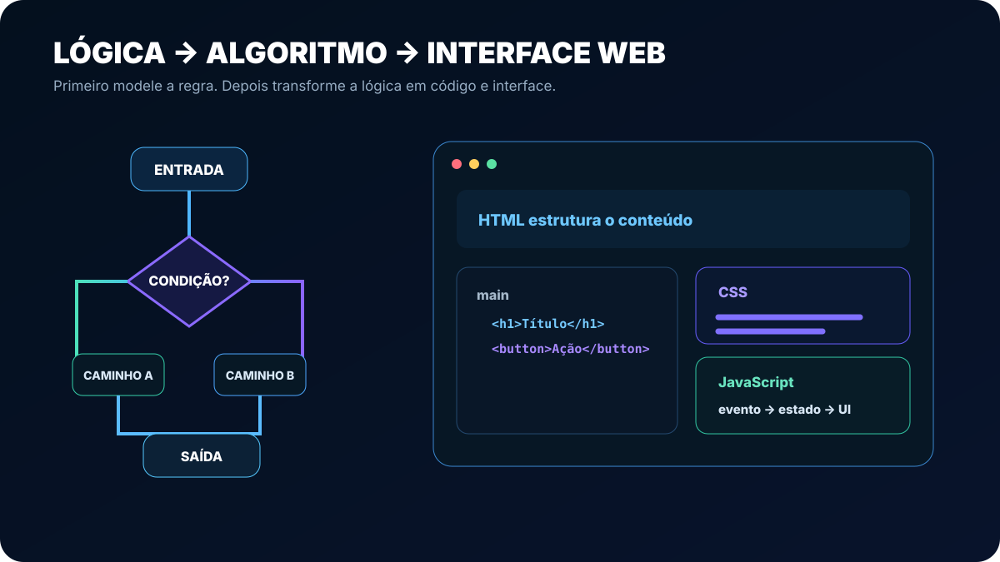
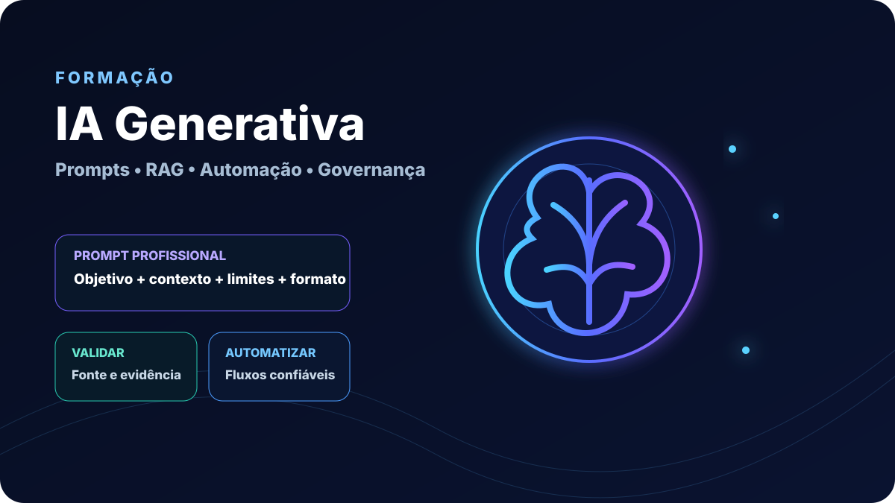
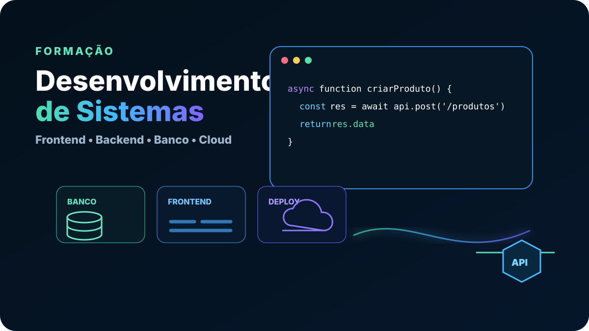

Aprenda fazendo, sem sair da aula.
A Nexora Academy combina microaulas de 15–25 minutos, prompts, planilhas, consoles, SQL, APIs, quizzes de múltipla escolha e Boss Fights de portfólio. Sem mensalidade e sem conteúdo bloqueado por pagamento.
Fundamentos antes da especialização

Lógica de Programação Básica
Para quem nunca programou: problemas, algoritmos, variáveis, decisões, repetições, funções e listas. Quem já domina a base pode fazer um diagnóstico e avançar.
Construa sua base no seu ritmo
Pensamento Computacional, Pseudocódigo e Fluxogramas, Matemática para Programadores, Terminal e Git, Introdução à Web e Primeiros Passos com Python.
Depois, a plataforma recomenda a próxima formação de acordo com seu objetivo.
Criar conta e descobrir caminhoDa base à entrega funcional

IA Generativa para Trabalho e Negócios
Prompting, pesquisa e verificação, texto, dados e planilhas, imagens, produtividade, automação, agentes, RAG, APIs, governança e projeto final.

Desenvolvimento de Sistemas com IA
Lógica, web, JavaScript, Git, TypeScript, React, banco, APIs, autenticação, full stack, testes, Cloudflare, IA no desenvolvimento, SaaS e projeto final.
Ajude a manter a Nexora gratuita.
Contribuições ajudam com hospedagem, banco de dados, revisão acadêmica e novas ferramentas. Elas nunca alteram acesso, nota, prioridade ou certificado.
Apoiar por Pix ou Mercado PagoLC Soluções Digitais
A LC apoia a evolução tecnológica da Nexora e atua com sites, sistemas, automações e dashboards.
Conhecer a LC